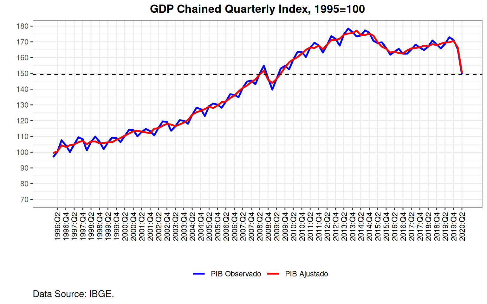
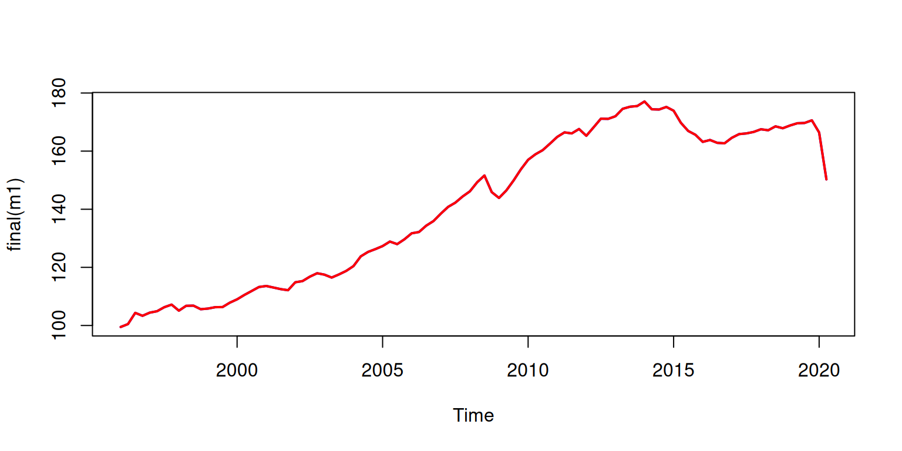
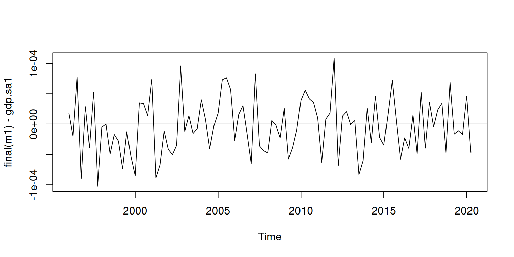
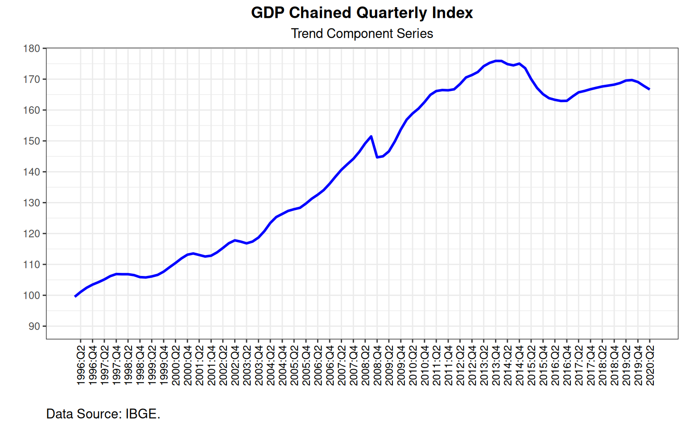
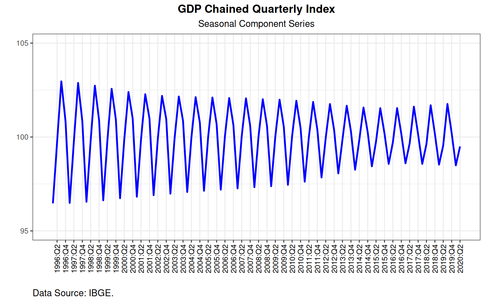

In this post, I will replicate the IBGE Seasonally Adjusted GDP from the GDP Chained Quarterly Index with the seasonal package
On the IBGE publication of the Brazilian GDP data, they release, among others, 3 series:
On this post, I will try to match the IBGE model of Seasonally Adjusted using the X13-ARIMA software. A note of caution is in order here, I am not actually trying to model the series, what we are trying to do is to match the IBGE model.
To replicate the IBGE model, we use the GDP Chained Quarterly Index (with NO seasonal adjustment) and use the X13-ARIMA software through the seasonal package.
The seasonal package depends on the x13binary package. It should automatically download and compile the x13 program. But, alas, it didn’t work on my machine, so I manually downloaded the program from the census bureau website and indicated to R where the program was located.
Let’s load the seasonal package and use the checkX13() function to check if it is working:
library(seasonal)
The system variable 'X13_PATH' has been manually set to:
~/X13
Since version 1.2, 'seasonal' relies on the 'x13binary'
package and does not require 'X13_PATH' to be set anymore.
Only set 'X13_PATH' manually if you intend to use your own
binaries. See ?seasonal for details.
checkX13()
X-13 installation test:
- X13_PATH correctly specified
- binary executable file found
- command line test run successful
- command line test produced HTML output
- seasonal test run successful
Congratulations! 'seasonal' should work fine!OK. It works.
First, let’s load up our functions and other libraries.
# source functions
source("../../R/funs-gdp.R")
# load libraries
library(reshape2)
library(ggplot2)Now, we load the data and make some transformations.
# LOAD DATA
gdp.index.NSA <- readRDS("../../data/gdp-index-NSA.rds")
gdp.index.SA <- readRDS("../../data/gdp-index-SA.rds")
gdp.nsa <- df2ts( gdp.index.NSA )[, "GDP"]
gdp.sa1 <- df2ts( gdp.index.SA )[, "GDP"]
gdp.index <- cbind(gdp.index.NSA[, c(1,2,3)], "NSA"=gdp.index.NSA$GDP, "SA"=gdp.index.SA$GDP)Now that the data is loaded, let’s make a plot.

On the IBGE release we can find the model used by IBGE on the Table on Page 24. There it says:
| Variável | sazonalidade | decomposição | modelo arima | efeitos de intervenção |
|---|---|---|---|---|
| PIB | Sim | multiplicativo | (2 1 2)(0 1 1) | TD, Easter[1], LS2008.4, AO2020.2 |
So let’s try to replicate it using the seasonal package. The X13-ARIMA should do everything automatically.
First, we try a vanilla call, just seas(gdp.nsa), let’s see what it outputs:
# Vanilla Model
m0 <- seas(gdp.nsa)
summary(m0)
Call:
seas(x = gdp.nsa)
Coefficients:
Estimate Std. Error z value Pr(>|z|)
Weekday 0.0012918 0.0005785 2.233 0.0255 *
LS2008.4 -0.0512843 0.0116034 -4.420 9.88e-06 ***
AO2020.2 -0.1072112 0.0128372 -8.352 < 2e-16 ***
MA-Seasonal-04 0.6342704 0.0755385 8.397 < 2e-16 ***
---
Signif. codes: 0 '***' 0.001 '**' 0.01 '*' 0.05 '.' 0.1 ' ' 1
SEATS adj. ARIMA: (0 1 0)(0 1 1) Obs.: 98 Transform: log
AICc: 387.1, BIC: 399.1 QS (no seasonality in final): 0
Box-Ljung (no autocorr.): 10.28 Shapiro (normality): 0.977 .Also, we can check the call used by the function:
static(m0)
seas(x = gdp.nsa, regression.variables = c("td1coef", "ls2008.4",
"ao2020.2"), arima.model = "(0 1 0)(0 1 1)", regression.aictest = NULL,
outlier = NULL, transform.function = "log")OK, so it is a SARIMA model \((0, 1, 0)(0, 1, 1)\) with level shift on 2008:Q4 and an outlier on 2020:Q2. Also, there is a weekday effect. Comparing with the IBGE model, it is NOT the same. The IBGE model has SARIMA of order \((2, 1, 2)(0, 1, 1)\) and easter effect. About the Trading Days (TD), the IBGE release is a little mysterious, what kind of TD did they use? There is not a unique specification for that effect.
Now, let’s check the difference between IBGE’s seasonal ajustment and ours.
mean( abs( gdp.sa1 - final(m0) ) )
[1] 0.1729848
all.equal(gdp.sa1, final(m0))
[1] "Mean relative difference: 0.001224425"So it is really not the model we want.
Let’s try some more specifications:
m1 <- seas(
x = gdp.nsa,
transform.function = "log",
arima.model = "(2 1 2)(0 1 1)",
)
summary(m1)
Call:
seas(x = gdp.nsa, transform.function = "log", arima.model = "(2 1 2)(0 1 1)")
Coefficients:
Estimate Std. Error z value Pr(>|z|)
Weekday 0.0012377 0.0005456 2.269 0.02330 *
Easter[1] -0.0029428 0.0018472 -1.593 0.11114
LS2008.4 -0.0509225 0.0112885 -4.511 6.45e-06 ***
AO2020.2 -0.1028350 0.0126628 -8.121 4.62e-16 ***
AR-Nonseasonal-01 -0.1208207 0.1792415 -0.674 0.50027
AR-Nonseasonal-02 0.5719158 0.1910685 2.993 0.00276 **
MA-Nonseasonal-01 -0.2223337 0.1995344 -1.114 0.26517
MA-Nonseasonal-02 0.5275199 0.2057442 2.564 0.01035 *
MA-Seasonal-04 0.6271997 0.0927007 6.766 1.33e-11 ***
---
Signif. codes: 0 '***' 0.001 '**' 0.01 '*' 0.05 '.' 0.1 ' ' 1
SEATS adj. ARIMA: (2 1 2)(0 1 1) Obs.: 98 Transform: log
AICc: 395.4, BIC: 418 QS (no seasonality in final): 0
Box-Ljung (no autocorr.): 6.437 Shapiro (normality): 0.9745 .
mean( abs( gdp.sa1 - final(m1) ) )
[1] 0.1389248
all.equal(gdp.sa1, final(m1))
[1] "Mean relative difference: 0.0009833405"OK, there’s something wrong. Checking the IBGE CNT website under Ajuste_Sazonal there is a pdf that explains how the function call is made by the IBGE researcher. We can use the view(m1) function to get direct access to the X13 program by means of a shiny app. On the X13 program we have to use the options listed below (the IBGE pdf has a typo, it says tipes when it should be types):
transform{
function = auto
}
regression{
aictest = (td easter)
}
pickmdl{
method = best
identify = all
}
outlier{
types = all
}
forecast{
maxlead = 6
maxback = 0
}
x11{
savelog = q
}Sending the output to the console, we get the static() call, which can be summarised as:
m1 <- seas(x = gdp.nsa,
automdl = NULL,
pickmdl.method = "best",
pickmdl.identify = "all",
outlier.types = "all",
forecast.maxlead = 6,
forecast.maxback = 0,
x11.savelog = "q")
summary(m1)
Call:
seas(x = gdp.nsa, automdl = NULL, pickmdl.method = "best", pickmdl.identify = "all",
outlier.types = "all", forecast.maxlead = 6, forecast.maxback = 0,
x11.savelog = "q")
Coefficients:
Estimate Std. Error z value Pr(>|z|)
Weekday 0.0012377 0.0005456 2.269 0.02330 *
Easter[1] -0.0029428 0.0018472 -1.593 0.11114
LS2008.4 -0.0509225 0.0112885 -4.511 6.45e-06 ***
AO2020.2 -0.1028350 0.0126628 -8.121 4.62e-16 ***
AR-Nonseasonal-01 -0.1207980 0.1792272 -0.674 0.50032
AR-Nonseasonal-02 0.5719139 0.1910600 2.993 0.00276 **
MA-Nonseasonal-01 -0.2223111 0.1995181 -1.114 0.26518
MA-Nonseasonal-02 0.5275208 0.2057344 2.564 0.01034 *
MA-Seasonal-04 0.6272008 0.0927001 6.766 1.32e-11 ***
---
Signif. codes: 0 '***' 0.001 '**' 0.01 '*' 0.05 '.' 0.1 ' ' 1
X11 adj. ARIMA: (2 1 2)(0 1 1) Obs.: 98 Transform: log
AICc: 395.4, BIC: 418 QS (no seasonality in final): 0
Box-Ljung (no autocorr.): 6.438 Shapiro (normality): 0.9745 .
mean(abs( gdp.sa1 - final(m1) ))
[1] 3.774537e-05
all.equal(gdp.sa1, final(m1))
[1] "Mean relative difference: 2.671702e-07"
static(m1)
seas(x = gdp.nsa, forecast.maxlead = 6, forecast.maxback = 0,
x11.savelog = "q", regression.variables = c("td1coef", "easter[1]",
"ls2008.4", "ao2020.2"), arima.model = "(2 1 2)(0 1 1)",
regression.aictest = NULL, outlier = NULL, transform.function = "log")Now, not only the function returned the specification described on the IBGE release, but also the differences are after the 4th decimal place (which suggests rounding errors only).
Let’s plot the Seasonally Adjusted Index and the differences of the IBGE original series from Table 1621 and our X13 adjustment:
plot(final(m1), col = "blue", lwd=2)
lines(gdp.sa1, col="red", lwd=2)
plot(final(m1)-gdp.sa1)
abline(h=0)
Yeah, it is pretty close.
Also, let’s check if the T/T-1 returns match:
gdp.ret1.full <- readRDS("../../data/gdp-ret1.rds")
gdp.ret <- df2ts( gdp.ret1.full )[, "GDP"]
myret1 <- ts(round(ret1(gdp.sa1),1), start=c(1996,1), freq=4)
myret2 <- ts(round(ret1(final(m1)),1), start=c(1996,1), freq=4)
all.equal(gdp.ret, myret1)
[1] TRUE
all.equal(gdp.ret, myret2)
[1] TRUEIt does! We did it!
Finally, let’s replicate the Figures I.4 and I.5 of the IBGE release with ggplot:


And it looks a lot like they are the same plots.
So, thanks to the IBGE documentation we could replicate the Seasonally Adjusted series. I think I only wished it was a little easier to find it; also in the release, there could be calls made to the X13 program. But well, at least they did publish the calls, it was just a bit out of the way for us to find it.
If you see mistakes or want to suggest changes, please create an issue on the source repository.